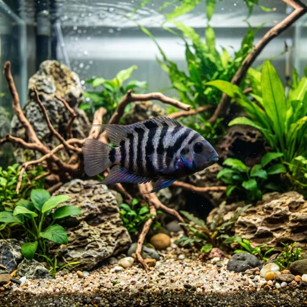

Nome popular principal
Acará do Congo
Acará do Congo, Ciclídeo do Congo, Convict Cichlid, Ciclídeo Zebra
Ficha de peixe
Ciclídeos
Um ciclídeo resistente e de cores marcantes, famoso por sua extrema facilidade de reprodução e forte territorialismo.

Nome popular principal
Acará do Congo, Ciclídeo do Congo, Convict Cichlid, Ciclídeo Zebra
Nome científico
Nome técnico essencial para taxonomia, cruzamento de manejo e referência editorial consistente.
Dificuldade de manejo
Use este nível como referência inicial, sempre considerando volume, estabilidade e compatibilidade do aquário.
Seção 1
Seção 2
Seções 4 a 6
Acará do Congo tem hábito alimentar onívoro. Excelente. 1 a 2 vezes ao dia. Aceita praticamente qualquer alimento com ganância, desde rações secas para ciclídeos até alimentos vivos e vegetais.
Fêmeas são menores e apresentam escamas alaranjadas ou avermelhadas no ventre; machos são maiores e desenvolvem cupim nupcial. Tipo de reprodução: Ovíparo. Dificuldade de reprodução: Fácil. Desova facilmente dentro de cavernas e o casal defende os ovos e filhotes com ferocidade contra qualquer invasor.
Baixa. Substrato recomendado: Cascalho fino ou areia, com abundância de rochas e cavernas. Necessidade de esconderijos: Alta. Costuma cavar bastante o substrato e desenterrar plantas; prefere decoração baseada em rochas firmes e cavernas de vaso de barro.
Seção 7
Alcança até 15 cm e pode viver cerca de 10 anos em aquários com boa filtragem e espaço adequado.
Seção 8
Sim, é um peixe bastante territorialista que ataca ferozmente outros peixes para defender sua toca e filhotes.
Sim, é um dos ciclídeos mais fáceis de reproduzir em cativeiro, necessitando apenas de um casal e uma caverna.
Um aquário a partir de 100 litros é recomendado para manter um casal com segurança e refúgios.